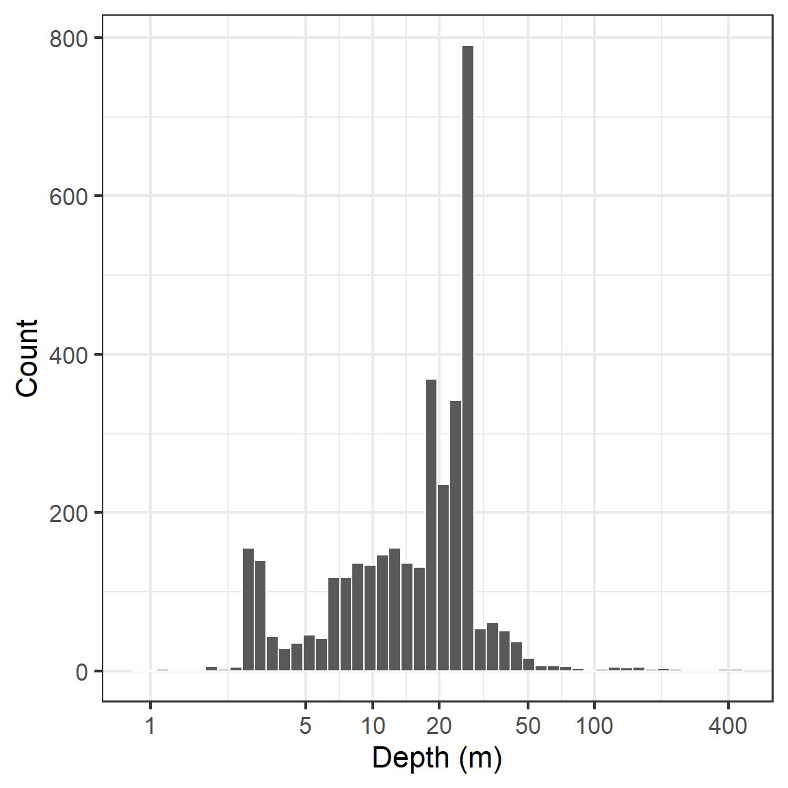

Morphometric distribution of depth and basin shape in Aotearoa New Zealand lakes
Tadhg Moore ![]()
Limnotrack
Motivation
- Developing the Lake Ecosystem Research New Zealand modelling platfom (LERNZmp).

- Lake depth and morphometry are key drivers of lake ecosystem function (Ganz, Glines, and Rose 2024), therefore accurate depth data is essential.
- The Freshwater Ecosystems New Zealand (FENZ) database is the most comprehensive database of lake morphometry in New Zealand, but is limited in its depth data.
- NZ lakes provide a unique opportunity to develop a comprehensive database of lake depth and morphometry, particularly given the diversity of lake size, depth and geomorphic type.
Max depth vs Lake area

Figure 2: Depth vs Area of FENZ lakes
Lakes with bathymetry data
- Lakes with bathymetric data are relatively evenly distributed across New Zealand.
- Lake geomorphic type is highly regionalised.

References
Ganz, Keenan J., Max R. Glines, and Kevin C. Rose. 2024. “The Distribution of Depth, Volume, and Basin Shape for Lakes in the Conterminous United States.” Limnology and Oceanography 69 (1): 22–36. https://doi.org/10.1002/lno.12475.
Khazaei, Bahram, Laura K. Read, Matthew Casali, Kevin M. Sampson, and David N. Yates. 2022. “GLOBathy, the Global Lakes Bathymetry Dataset.” Scientific Data 9 (1): 36. https://doi.org/10.1038/s41597-022-01132-9.
Messager, Mathis Loïc, Bernhard Lehner, Günther Grill, Irena Nedeva, and Oliver Schmitt. 2016. “Estimating the Volume and Age of Water Stored in Global Lakes Using a Geo-Statistical Approach.” Nature Communications 7 (1): 13603. https://doi.org/10.1038/ncomms13603.